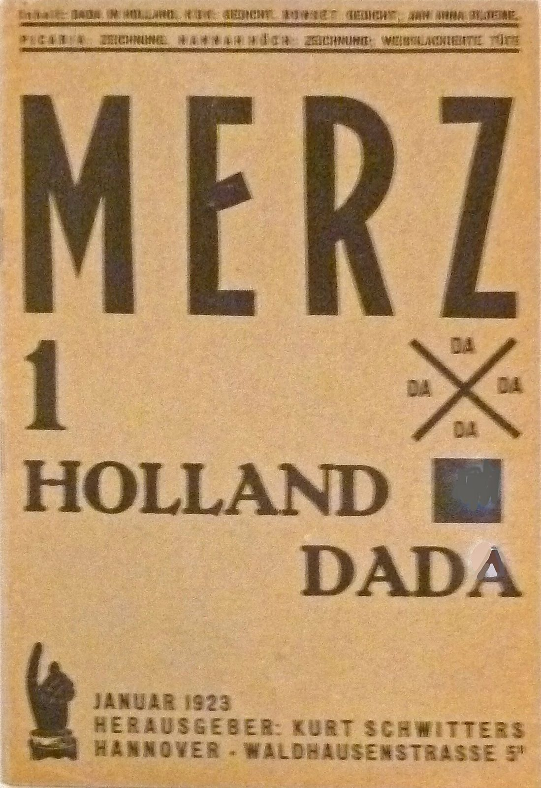

References / Editorial / 447
Merz 1: Holland Dada, January 1923
The first issue of Kurt Schwitters’s magazine Merz puts a condensed MERZ, a heavy roman HOLLAND DADA, a crossed DA sign, and a pointing hand on one plain cover.
- Source
- Wikimedia Commons: Merz no. 1 (Holland Dada), Rijksmuseum RP-P-BR-2013-2-3
- Creator
- Kurt Schwitters (editor and publisher)
- Made
- January 1923
- Style
- Dada (agent-proposed, not yet reviewed by a person)
- Moods
- Typographic, ironic, raw
- Evidence
- Inspected JoJan’s photograph of the Rijksmuseum copy, RP-P-BR-2013-2-3, on loan from the Stedelijk Museum Amsterdam (Commons, 1551 × 2259 px original, viewed at 1200 px). The photograph is taken at a slight angle and has a glare spot on the last letter A. The Rijksmuseum object URL in the old format returned HTTP 404 on 2026-10-02, so the object data comes from the Commons record.
- Reviewed
- Rights
- Open license, stored. License: CC-BY-SA-3.0. Rights policy

Context
Commons records the object as the first number of the journal Merz, January 1923, letterpress, in the Rijksmuseum (RP-P-BR-2013-2-3), on loan from the Stedelijk Museum Amsterdam since 2013. Commons.
The table of contents on the cover lists “Dada in Holland”, poems by Kok and Bonset, “An Anna Blume”, and drawings by Picabia and Hannah Höch. Commons inscription field.
Schwitters published Merz from Hannover from 1923 to 1932. Wikipedia: Kurt Schwitters. The first issue followed the Dutch Dada tour with Theo van Doesburg; see the soirée program.
Observed
- “MERZ” fills the top half in very tall, condensed sans-serif capitals, set wide apart.
- Below it, a large numeral “1” and “HOLLAND DADA” in a heavy roman with bracketed serifs, a different face from the title.
- At the right, a black X with “DA” in each of its four angles, and below it a small dark blue square pasted or printed on the page.
- A large black pointing hand, a stock printer’s cut, points up at the lower left.
- The contents at the top and the imprint at the bottom are small heavy grotesque capitals between thin rules.
- The ink is black on buff-brown paper. The blue square is the only other color.
Why it belongs
The cover shows Hannover Dada at its most typographic: three unrelated faces and a stock cut on one page, but held in a mostly left-aligned column. It points ahead to Schwitters’s later constructive typography.
Borrow
Pair a very condensed sans title with a heavy roman subtitle, so the contrast of faces does the work.
Use a large pointing hand as the only image, and point it at the title.
Measured
Machine-extracted by tools/image-traits.py on . Full measurement.
- Mean chroma
- 0.31
- Palette
- #cea675 52%
- #d3b085 18%
- #57422c 13%
- #b39167 4%
- #6a4c29 2%
- #9b794f 2%
- #8d6b42 2%
- #a7855c 2%

